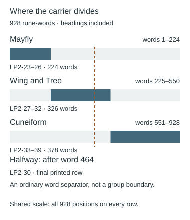
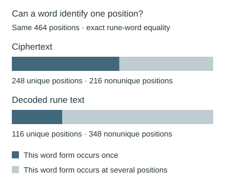

Grilles and the 928-word carrier
Locate the proposed carrier, distinguish word forms from positions, and specify a reproducible grille test.
On this page
Two observations motivate this proposal: a solved-text arrangement contains 464 rune-words, and a selected unsolved span contains 928, exactly twice as many. This guide keeps those two populations separate, checks the counts, and explains what a word-matching rule would still have to specify.
What would a carrier or grille do?
Here, a carrier is the text from which a proposed method would select material. A grille is a mask specifying positions to read. Giving a carrier the right size does not define that mask. A word-matching proposal also needs to decide how repeated word forms identify particular occurrences.
Start with the 928-word inventory to locate the proposed carrier, or the word-lookup audit to understand duplicate handling. For the distinct statistical question about the solved 464-word arrangement, see the column-balance experiment and its related variants.
The proposed 928-word carrier

A proposed companion to the 464-word arrangement uses the contiguous pages LP2-23–39. Under the counting rule below, they contain 928 rune-words and 4,134 runes. This reproduces the proposed total of twice 464. It does not specify how to pair, mask or read those words.
| Community group | Exact pages | Rune-words | Runes |
|---|---|---|---|
| Mayfly | LP2-23–26 | 224 | 1,021 |
| Wing and Tree | LP2-27–32 | 326 | 1,433 |
| Cuneiform | LP2-33–39 | 378 | 1,680 |
The supplied account gives the subtotals 224 + 349 + 355. Our archived transcription and the explicit page ranges above instead give 224 + 326 + 378. The total agrees; the allocation does not. The original attached inventory was not supplied, so its boundaries and counting choices cannot be reconstructed from those three numbers alone.
What counts as a word?
Keep headings and every rune. Remove slash and newline wrap notation, then count runs of Gematria Primus runes, allowing an apostrophe inside a word. Other non-runes remain boundaries. Process each group separately. Five decimal tokens—1 on LP2-36, 2–4 on LP2-37 and 5 on LP2-38—are recorded separately; they are not rune-words. Including those five labels would give 933 tokens under that expanded definition.
Where does the halfway split fall?
Word 464 is ᛋᚠᚾ; word 465 is ᚢᚦᛟᚷᛖᚪᛟᛇᛇ. Both appear in the final printed row of LP2-30, called scan 47 in zero-based combined numbering. The transcription separates them with an ordinary word separator, not a sentence or page boundary. Visual inspection of the original confirms the two groups and the single separating dot.
Thus two equal lists of 464 words can be formed by counting, but the midpoint is not itself a marked division. A grille proposal still needs a fixed layout, placement, orientation, selection rule and readout order. A successful count is not a successful extraction.
Reproduce the inventory
Download the reference-data ZIP and extract its folders. The audit script uses only Python’s standard library. A state-based scanner and a regular-expression scanner must agree on every word span. The complete inventory retains all 928 words, their source pages, line numbers, character offsets, decimal labels and source hashes. This checks the archived transcription; it is not a fresh certification of every manuscript glyph.
python scripts/audit_928_carrier.py --output carrier-replay.jsonCan a word identify a unique position?
A word-based lookup needs more than a matching spelling: it needs to tell the reader which occurrence to use. In the four solved LP1 sections underlying the 464-word arrangement, ciphertext has more distinct forms than decoded rune text. It still leaves many positions indistinguishable by word form alone.

| Measurement | Ciphertext | Decoded rune text |
|---|---|---|
| All word positions | 464 | 464 |
| Distinct forms | 304 | 180 |
| Forms appearing once | 248 | 116 |
| Forms appearing more than once | 56 | 64 |
| Positions belonging to repeated forms | 216 | 348 |
| Occurrences beyond the first of each form | 160 | 284 |
The distinction between the final two rows matters. If a form appears three times, it creates three positions that cannot be distinguished by spelling alone, but only two occurrences beyond its first appearance. Thus 464 − 304 = 160 does not count all ambiguous ciphertext positions; that count is 464 − 248 = 216.
For example, ciphertext ᚪᛞᛠ appears at fourteen positions. Decoded ᚦᛖ appears at thirty-two. The complete report lists every occurrence by its one-based ordinal in the 464-word object. These repeats need not be adjacent. A proposal can resolve them with a specified positional rule, but choosing whichever occurrence yields a desired phrase adds an undeclared choice.
Representation and reproduction
The audit retains the established word boundaries, headings, interruptions and internal apostrophes. It reconstructs the original ciphertext words from archived pages and replaces each rune with its checked output index from the known-reading traces. The decoded representation is a rune sequence, not a normalized English spelling. No alternate spelling, word segmentation or punctuation repair is introduced.
Extract the reference-data ZIP, then run:
python scripts/audit_word_identity.py --output word-identity-replay.json
python scripts/plot_word_identity.pyThe audit script rechecks all known cipher traces and the stored word inventory before counting. It also compares every pair of positions directly to check the grouped repetition calculation. The report preserves all words in both representations, each form’s positions and input hashes. This is a descriptive ambiguity check, not a carrier match, grille extraction or probability of intentional design.
What would make the proposal testable?
The inventories provide inputs for a test; they do not provide an extraction rule. Before trying to read a message, write down the following choices so another person can obtain the same output:
- Layout: which words or runes occupy each cell, including row width, wrapping and page boundaries.
- Selection: how the mask is derived and whether its positions refer to words, runes or something else.
- Placement: where the mask starts, which orientations are allowed and whether it moves.
- Duplicate handling: which occurrence a word match selects, or whether every match is retained.
- Readout and evaluation: the output order, the full candidate set and the criterion used to judge it.
If several choices are searched, retain all of them and apply the same search to the controls. If an opening influenced the rule, reserve a continuation for a prediction that does not change the rule. See search space and bounds, cribs and withheld text, and selection-aware controls.
No grille readout is claimed by either inventory on this page. The counts and their limits are reproducible observations that a future experiment can use.
Manuscript pages discussed
LP2-23 · LP2-24 · LP2-25 · LP2-26 · LP2-27 · LP2-28 · LP2-29 · LP2-30 · LP2-31 · LP2-32 · LP2-33 · LP2-34 · LP2-35 · LP2-36 · LP2-37 · LP2-38 · LP2-39 · LP1-01 · LP1-03 · LP1-04 · LP1-06 · LP1-07 · LP1-08 · LP1-09 · LP1-14 · LP1-15